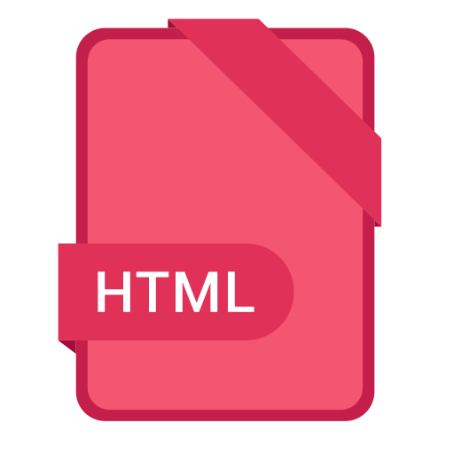
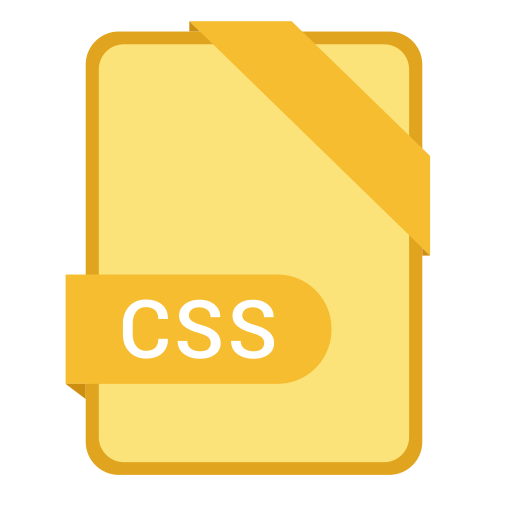
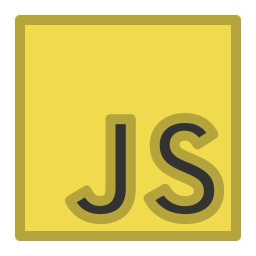

{kind=link}
Vanilla Tech
Simplicity and Sanity
in Software Development
In a world of ever-increasing software complexity, Vanilla Tech offers a refreshing alternative. Imagine a development process free from the shackles of bloated frameworks, obscure build processes, and endless Agile ceremonies. With Vanilla Tech, you return to the core principles of software development: writing clean, efficient code that directly translates into tangible business value.
Here's why Vanilla Tech might be the right choice for you
-
Focus on Engineering, Not Rituals
Vanilla Tech prioritizes the craft of coding over the burden of Agile ceremonies. This means less time spent in meetings and more time dedicated to solving real-world problems through elegant code.
-
Embrace Simplicity and Transparency
Vanilla Tech champions the use of straightforward, human-readable code using languages like HTML, CSS, JavaScript, PHP, and Python. You'll work directly with the code that runs your application, without the need for complex transpilation or preprocessing steps. This results in a transparent development process where the code you write is the code that runs, making debugging and maintenance a breeze.
-
Minimize Dependencies, Maximize Control
Vanilla Tech encourages minimizing reliance on external frameworks and libraries. By favouring built-in language features and lightweight solutions, you maintain greater control over your codebase, reducing the risk of encountering compatibility issues or struggling with the complexities of third-party tools.
-
Empower Developers, Reduce Cognitive Load
Vanilla Tech promotes a developer-centric approach, prioritizing tools and techniques that are easy to understand, implement, and maintain. This empowers developers to focus on delivering value without being bogged down by convoluted workflows or the steep learning curves associated with complex frameworks.
The Parity Development Manifesto
In an age of ever-expanding complexity in software development, this manifesto champions a different path—a path that seeks to restore clarity, control, and joy to the coding process. The Parity Development Manifesto advocates for an approach where developers interact with code directly, without unnecessary intermediaries, transformations, or abstractions. The essence of this philosophy is simple: What You Write is What You Run. This means the code you craft is the code that runs, untouched and unaltered, by the time it reaches execution.
We reject the bloat of modern tooling that often obscures the very thing it seeks to streamline. We believe that simpler, more transparent practices lead to better developers and a more fulfilling development experience. This is a call to shift our thinking back to basics, empowering developers to truly own their work from start to finish.
The Core Tenets
-
Direct Development on
Raw LanguagesWe advocate for building applications—both frontend and backend—using the core, unadulterated versions of languages like HTML, CSS, JavaScript, PHP, Python, and others. No preprocessing, transpiling, or obfuscating layers between what you write and what the machine executes. The philosophy is as pure as it sounds: your code should run as you envision it, without behind-the-scenes alterations. This allows you to understand your code’s behavior deeply, with zero surprises at runtime.
-
Say "No" to Excessive
Tooling and AbstractionsThere is an overwhelming variety of tools and languages built on top of other languages—TypeScript, SASS, template engines, minifiers, bundlers, build systems, and more. These tools, while sometimes powerful, often introduce layers of complexity that are unnecessary for most projects. They create a false sense of productivity, but at a cost: they demand attention, time, and cognitive resources better spent on the actual task at hand—solving problems through clean code.
Instead, this manifesto promotes simplicity. Write code in the language it was intended to be written. Don't obscure it with tools that hide its true nature. Reserve these tools only for cases where they are absolutely critical—and trust us, those cases are rare. In most scenarios, the simplest solution is not only good enough—it’s better.
-
Minimal Reliance on
Frameworks and LibrariesModern development has made frameworks and libraries almost ubiquitous. But ask yourself: do you understand the entire stack of code you’re pulling into your project? Can you debug it? Can you walk through it line by line? If the answer is no, then you’re not truly in control. You’re borrowing someone else’s solution without fully grasping how it works—and that’s risky.
This manifesto suggests a different approach. Minimize external dependencies. Focus on writing code that’s fully your own. Use frameworks and libraries sparingly, and only if you can fully understand and inspect what they do. The result? Lighter, faster, and more maintainable applications—and a developer who remains in complete command of their project.
-
Transparent, Predictable
Code BehaviorIf your application’s code evolves during runtime—whether through dynamic changes or updates—it must do so transparently. This means that any and all modifications should be traceable, debuggable, and easily understood. Code that behaves unpredictably is code that’s impossible to maintain. The goal is to eliminate surprises at runtime. By ensuring that all changes are trackable and testable, we maintain confidence in our code’s behavior across all environments.
Why Does This Matter?
The modern development landscape is saturated with layers of abstraction and complexity. Many of these are born from a desire to make coding easier, but in truth, they often achieve the opposite. Learning multiple layers of tooling, debugging through several layers of preprocessing, and wrestling with build pipelines do nothing but drain mental energy and extend development timelines.
By embracing the principles of Parity Development, we reduce cognitive load. No more wrestling with tools just to understand how they are manipulating your code. You write it, you run it, and you know it inside and out. This allows developers—whether novices or seasoned professionals—to focus on what really matters: solving problems through logic, creativity, and well-structured code.
Developer Empowerment
We believe that developers are at their best when they work directly with the code that powers their applications. Reducing reliance on complex tooling liberates developers to focus on the problems they’re solving, rather than fighting with their toolchain. You get faster feedback, clearer understanding, and a more rewarding coding experience.
The Pitfalls of Tool Obsession
Yes, employers often demand knowledge of Webpack, Bootstrap, React, and TypeScript. And yes, these tools have their place. But we firmly believe that a developer who first masters the core technologies—who truly understands what browsers and servers do with raw code—will be a far better developer in the long run. Start with the fundamentals; frameworks can always come later, and when they do, you’ll be better equipped to evaluate when and why to use them.
The Trade-Offs
Adhering to these principles does come with trade-offs. By choosing not to transpile your JavaScript down to ES5, you may alienate a small percentage of users still running outdated browsers or devices. But those users, who represent only 1-5% of the market, will need to update their hardware or software eventually. Meanwhile, the majority of your users—those on modern devices—will benefit from faster, cleaner, and more predictable code execution. Your focus should be on progress, not regress.
The Parity Development Manifesto isn’t just a set of principles—it’s a mindset shift. It’s about returning to what programming is truly about: writing code, solving problems, and creating experiences. By cutting through the clutter and focusing on simplicity, transparency, and developer control, we can build better software and enjoy the process more.
You might also be interested in:
Web Dev Podcast episode discussing the vanilla project development
Vanilla Tech Languages
-

HTML
HTML is the standard markup language for creating web pages. It defines the structure and content of a web page, including headings, paragraphs, images, links, and more. HTML is the foundation of all web pages, and it is essential for building dynamic and interactive websites.
-

CSS
CSS (Cascading Style Sheets) is a style sheet language used for describing the look and formatting of a document written in HTML. It allows you to separate the content and presentation of a web page, making it easier to maintain and update.
-


JavaScript
JavaScript is a programming language that allows you to add interactivity and dynamic behavior to your web pages. It is a versatile language that can be used for both front-end and back-end development, allowing for dynamic content control and server-side scripting.